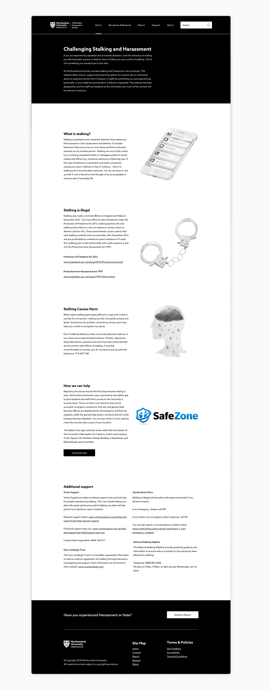
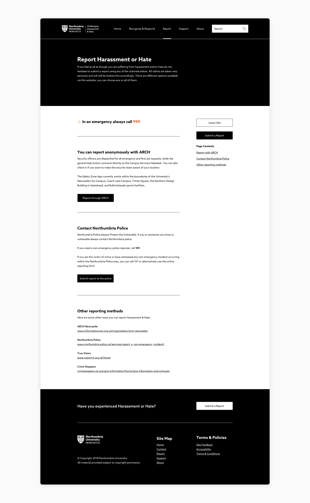
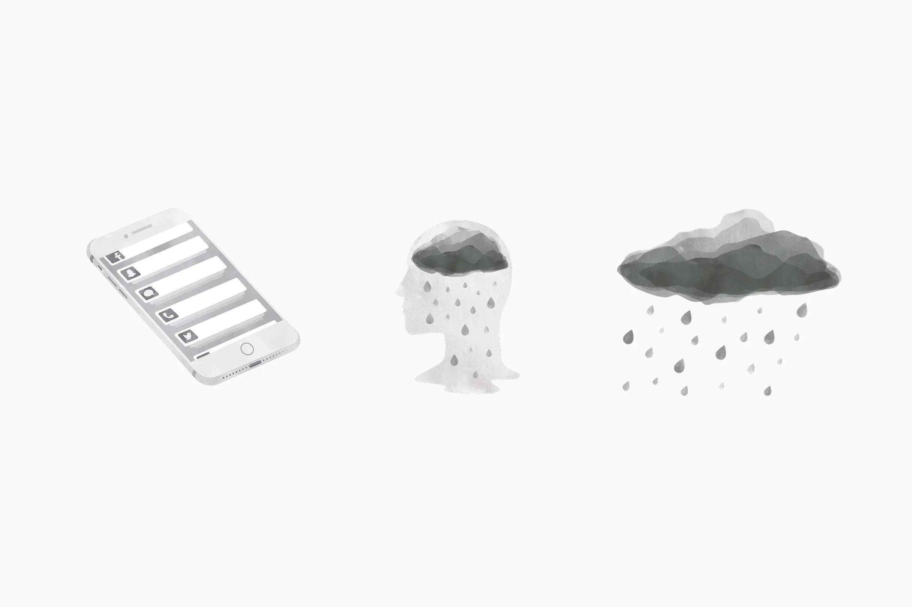

Project overview
I led the design of a dedicated support website for Northumbria University students facing stalking and harassment. We collaborated closely with Northumbria Police throughout the project to ensure the site provided the specific, actionable guidance required to support students in high risk situations.

Quick exit
A critical feature of the site was the "quick exit" call to action, which I implemented using established GOV.UK design patterns1. This safety mechanism allows students to instantly leave the site with a single click and are taken to Google. This was a crucial requirement for implementation, ensuring students can protect their privacy when accessing the site in communal university areas or avoid detection if a perpetrator is nearby.

Softening the visuals
Although we had to stay strictly within the confines of the newer black/white guidelines, we tried to soften the feeling up with custom illustrations.
